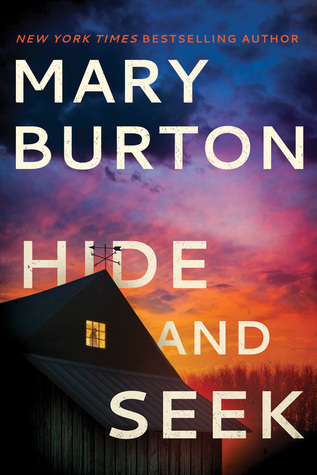
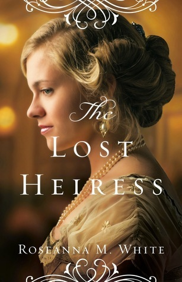

Hide and Seek (Criminal Profiler #3) by Mary Burton

“Never figured justice would have a price tag, but I guess everything does.”-Mary Burton
Special agent Macy Crow is tired of working a desk job and is keen to get back to work on the field. She wants to join one of the best FBI profiling teams and as part of the interview is given a case file of a teenage girl,
who went missing around fifteen years earlier, to review. Solving this case is Macy’s main goal and as she joins forces with an old acquaintance, Sheriff Mike Nevada, they quickly discover that there is more happening in the small town of Deep Run than meets the eye.
The characters are well-developed and the writing is quite fast-paced and it manages to keep the reader hooked all the way through.
The investigation aspect is very interesting and has a few twists and turns you don’t see coming.
Overall if you are looking for something that will keep you on the edge if your seat, this is the book for you.
The Lost Heiress( Ladies of the Manor) by Roseanna M. White

“You will see. There are boundaries—there always are.
But you can find your place within them. Learn how to live within a fence but let your spirit soar.”
The Lost Heiress is the first book in the Ladies of the Manor series by Roseanna M. White.
It is a Historical and Christian Fiction with a side of Romance and Mystery.
The story revolves around Brooke, who is searching for her place in this world, after finding out that the mother she has known all her life is not her real mother. With the help of her childhood friend
Justin, Lord Harlow, Brooke finds her father and his family, who welcome her with open arms, though the servants are a whole different story.
Meanwhile, Justin is trying to put his life back on track after a series of unfortunate events happen, and his life is turned upside down.
They must come together to protect Brooke from the danger she found herself in.